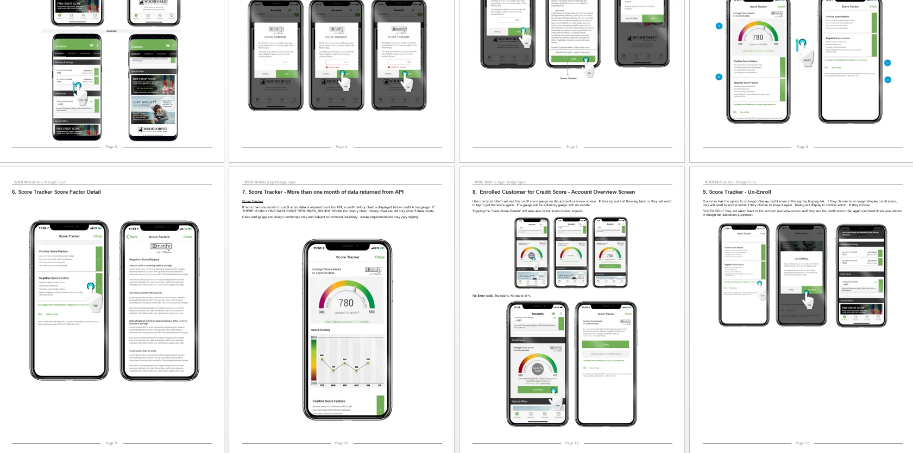
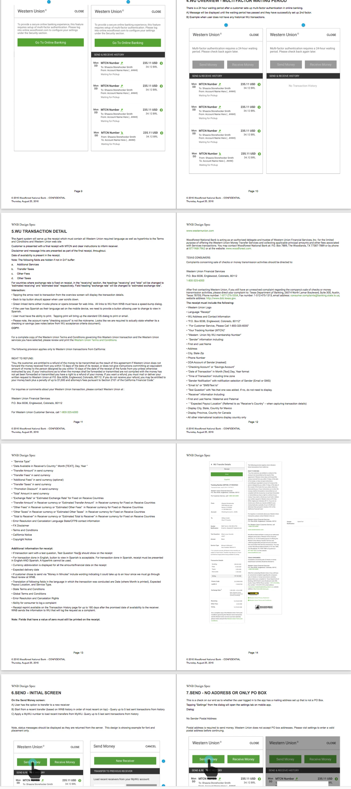
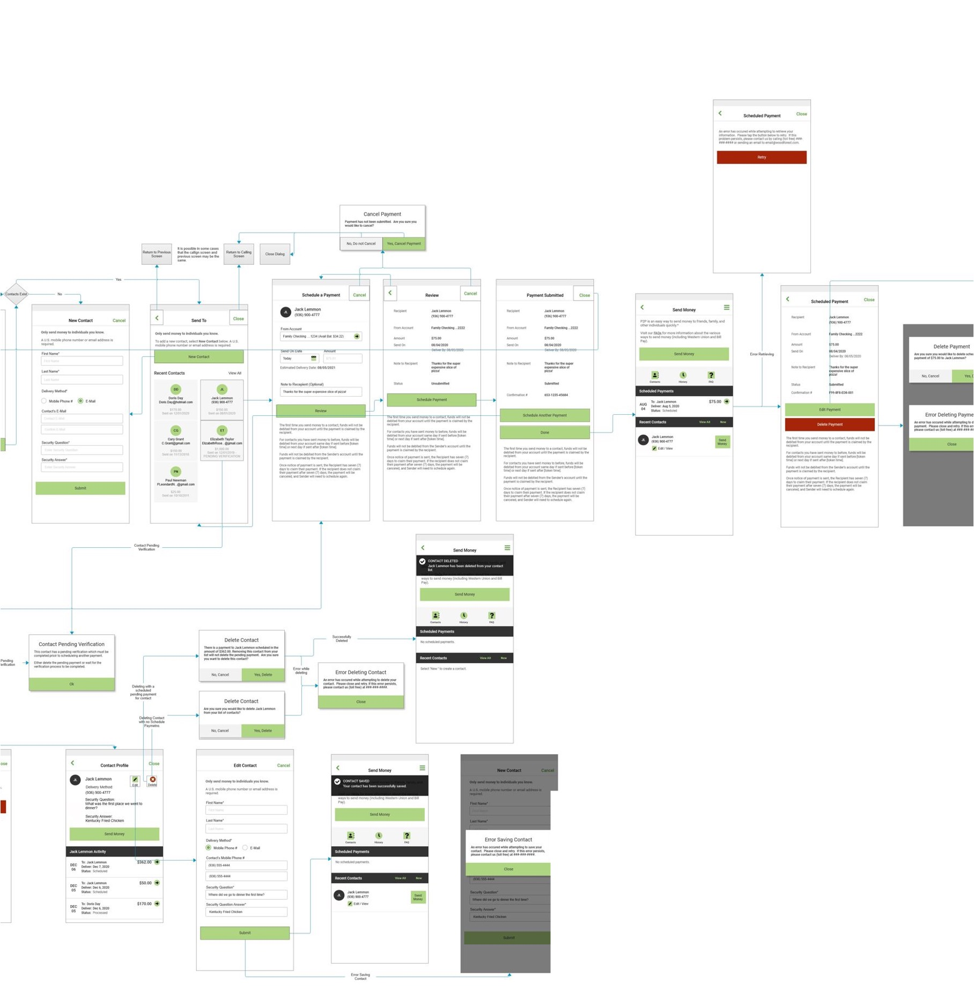
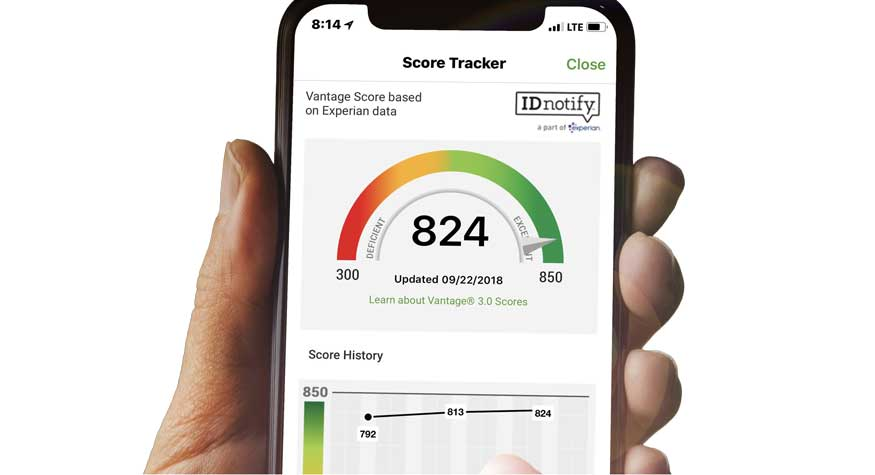
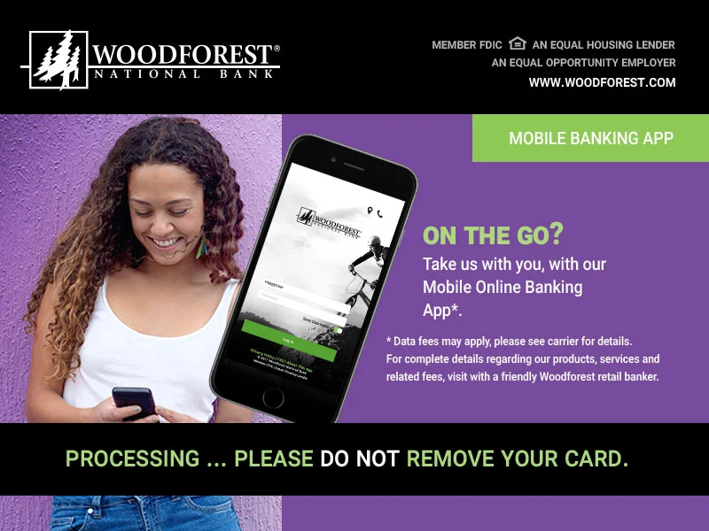
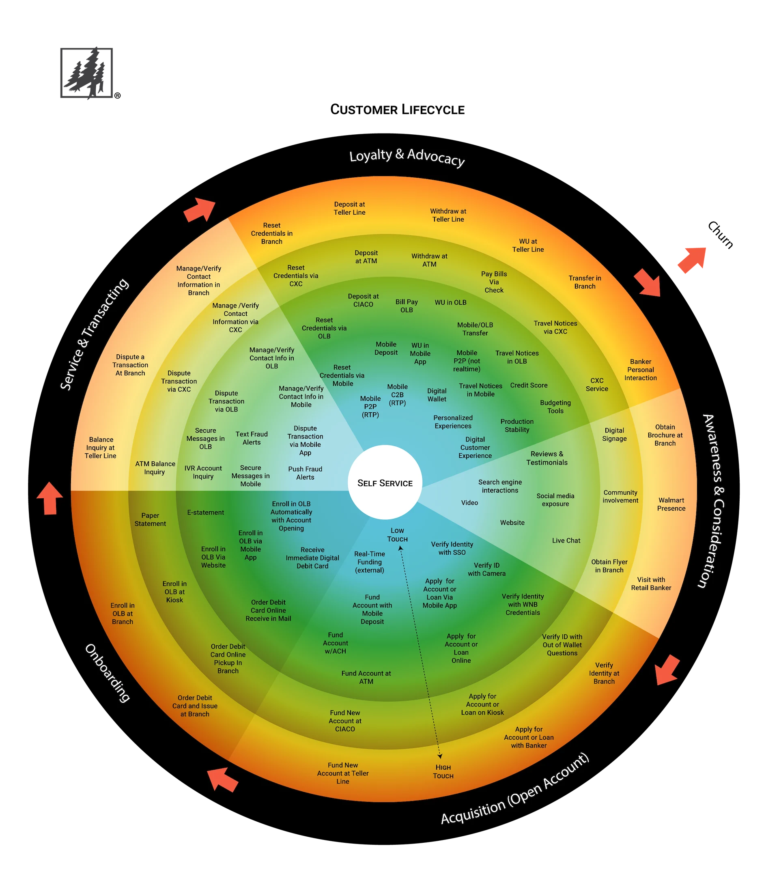
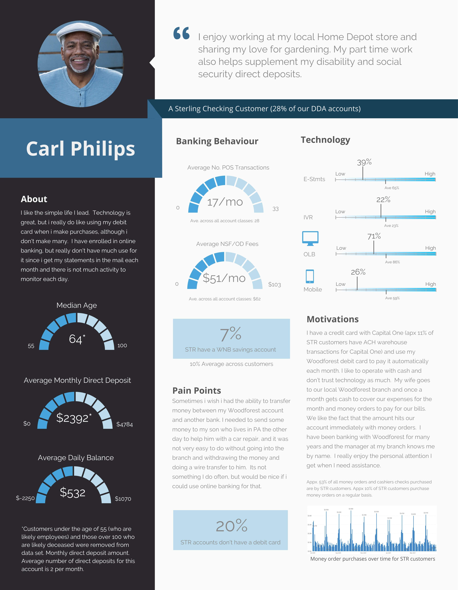
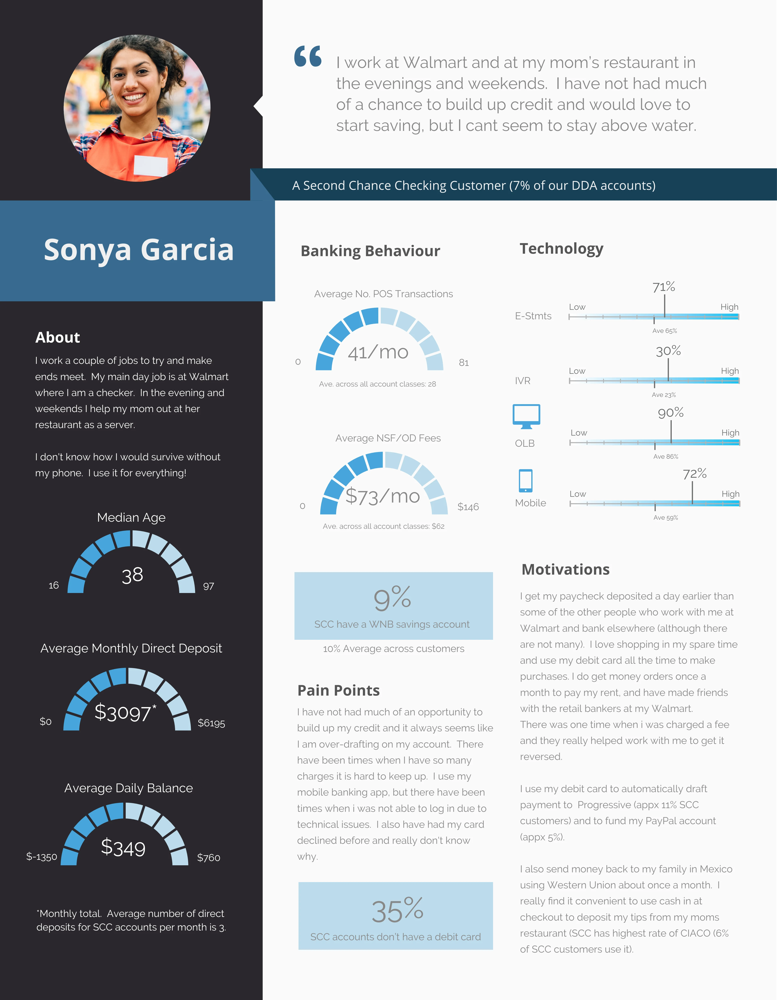

Case Study
Mobile Banking App
Led three initiatives to modernize mobile banking: a native iOS + Android redesign, a multi-channel adoption campaign, and a cross-channel journey analysis to improve parity and transitions between branch and remote banking.
Context- High-Trust Financial Platforms
This project addressed the challenge of designing clear, approachable experiences in regulated, high-trust environments. I focused on simplifying complex workflows through thoughtful information architecture, interaction design, and visual hierarchy. The result was a more cohesive system that supported user confidence while meeting technical and compliance constraints.
My role
I served as the lead designer and helped pioneer UX at the bank—owning end-to-end workflow redesign, spec-ready documentation, and high-fidelity execution across product and marketing touchpoints.
Ownership
Information architecture, workflows, UI patterns, prototypes, and implementation-ready specs.
Partners
Product, engineering, compliance/security, marketing, and branch stakeholders.
Constraints
- Trust + compliance: make verification and consent explicit at commit points (review/confirm/error recovery).
- Security patterns: login, second factor, and password recovery needed to be predictable and low-friction.
- Platform parity: consistent behavior across native iOS and Android.
- Channel transitions: customers move between branch, mobile, and support—handoffs needed continuity.
What I delivered
This work included three connected initiatives—each designed to improve day-to-day mobile banking while aligning product, marketing, and branch experiences.
Initiative 1: Native app redesign
I redesigned the mobile banking experience around task-based navigation, consistent UI patterns, and transaction transparency—balancing usability with security expectations by making key details easy to verify before committing.
- Core journeys: account overview, navigation, bill pay, transfers, and account management.
- Authentication & recovery: login, second-factor verification, forgot password, and error recovery states.
- Money movement: Western Union transfers, peer-to-peer transfers, and internal/external transfers.
- Customer control: settings, personal information management, and supporting account controls.
- Spec-ready delivery: detailed journey flows, screen-level specifications, and prototypes for build clarity.
Result: Delivered a clearer, more scalable mobile foundation with streamlined workflows, consistent patterns, and detailed specifications that reduced ambiguity for implementation and supported future iteration.
Artifacts
Deliverables included high-fidelity UI, interactive prototypes, and workflow specifications to align partners and accelerate delivery.
Design specs: mobile workflows
I produced end-to-end flows and screen-level specifications to improve consistency, reduce implementation ambiguity, and support iteration based on real customer behavior.




Initiative 2: Adoption marketing
After launching new features, the bank needed to drive awareness and adoption across a large footprint where customers encountered the brand both in-person and digitally.

- In-branch rollout: digital signage and print across 750+ branches in 17 states.
- ATM surfaces: screen creative aligned with mobile messaging and feature education.
- Email & web: campaigns and site assets to highlight capabilities and drive uptake.
- Brochures: feature storytelling designed for quick scan and reassurance.
Result: Customers encountered a unified message across physical and digital channels, reinforcing awareness of new features and supporting adoption of mobile banking behaviors.
Initiative 3: Cross-channel journey analysis
Banking is rarely a single-channel experience. Customers move between branch visits, mobile self-service, and assisted support—yet gaps in parity and handoffs can create confusion and duplicated effort.
- Journey mapping: documented transitions between branch, mobile, and support.
- Parity analysis: identified mismatches where mobile did not support common in-branch outcomes.
- Prioritization inputs: clarified high-value moments for mobile to reduce friction and improve continuity.
Result: Provided a clear view of where digital experiences needed better continuity with branch banking, helping teams prioritize parity improvements and reduce friction in channel transitions.

Personas: designing for real banking behaviors
Personas grounded the work in real constraints—technology comfort levels, banking habits, and pain points—so workflows served both confident mobile users and customers who need extra reassurance.


Outcome
Across product redesign, adoption marketing, and cross-channel journey analysis, this work established a scalable mobile foundation, strengthened trust-first patterns, and improved continuity between in-branch and remote banking experiences.